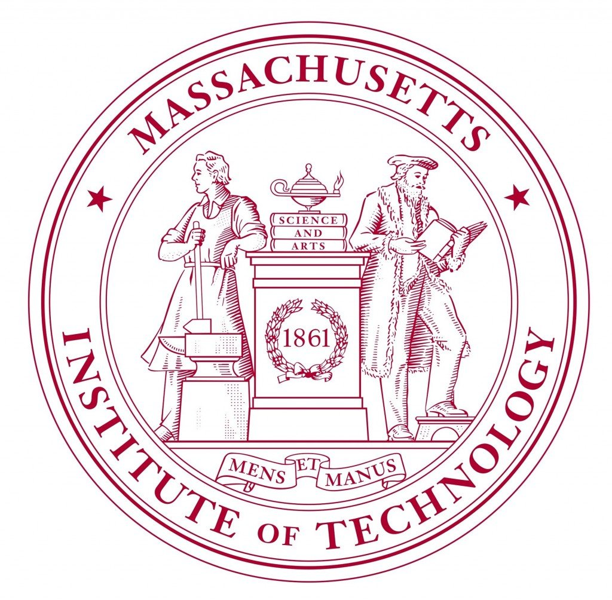

|
Qi Zhang | 张奇
I am a senior year undergraduate in computational mathematics at USTC, from School of the Gifted Young.
I was fortunated to work closely with Prof. Michael Kazhdan from JHU in the summer of 2022 on oriented point clouds as an SGI Research Fellow, and supervised by Prof. Juyong Zhang from USTC-3DV group.
Before that, I was a student in the Hua Loo-keng Talented Program in pure mathematics, USTC , especially in geometry.
Always looking for internships/collaborations, feel free to contact!
My wechat ID is qizhang_001 , always pleasure for new friends!!!
Email /
CV /
Github /
Twitter
|
|
News
☑︎[01/03/2023] Will upload more once first publication comes!!!
☑︎[25/02/2023] New days, new awesome website!!!
|
|
Research
I am totally interested in geometry processing, computer vision 👁️ and graphics 🫖.
|
|  |
Massachusetts Institute of Technology, Boston, USA.
2022.06 - 2022.09.
SGI Research Fellow (UROP).
homepage / blog / code.
|
|
University of Science and Technology of China, Hefei, China.
2019.09 - 2023.06 (with distinction).
School of the Gifted Young.
B.S. in Informational & Computational Science (math).
|
|
Huggingface 🤗 Community.
2023.02 - Present.
Student volunteer for localization of community documents and blogs.
|
|
Differential Geometry (100+ students), Prof. Yongbin Zhang.
2022 fall, teaching assistant.
course-page
|
Awards
✦ National scholarship of China (2%), 2022.
✦ SGI Research Fellow, 2022.
✦ Mathematics competition of Chinese College Students (math major), Second Prize. 2021.
✦ Jiuzhang Cup, mathematics contest in USTC (top 3), 2021.
✦ Outstanding student scholarship, silver prize (10%), 2021, 2020.
✦ Outstanding freshman scholarship, bronze prize (20%), 2019.
|
|
Miscellaneous
I am hacking cowboy 🤠( archlinux 🌉 ), you can checkout my blog (in-building).
Aside from that, I run short marathon 🏃🏽 appreciate pure music 🎧 (classic music and OST from movies), and happy to learn new natural languages.
|
|
"苔花如米小,也学牡丹开". --袁枚《苔》
"Even the leek flower buds as tiny as a rice, yet blooms as gorgeous as a peony."
Nice template stolen from Yijia Weng and Jon Barron.
Thanks for stopping by ;).
Last updated: March, 2023.
|
|